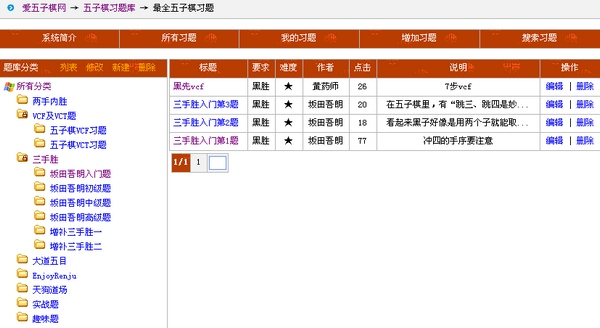
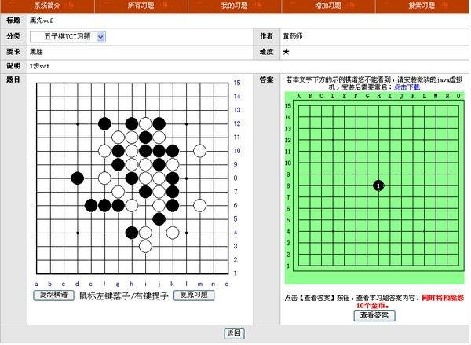
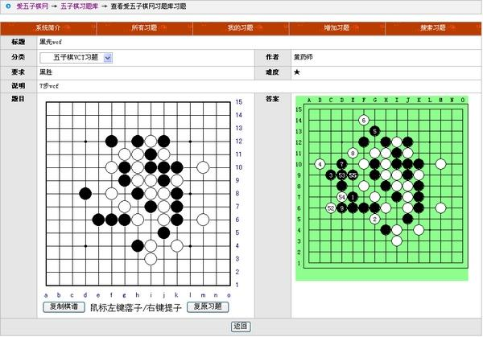
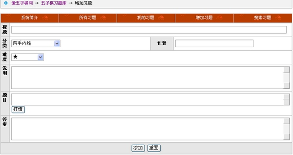
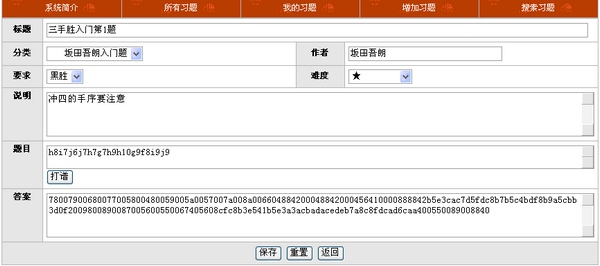
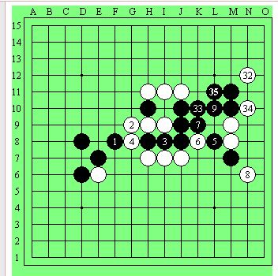

爱五子棋网在线习题库正式上线
#1 爱五子棋网在线习题库正式上线 作者：有志青年 发表时间：2011-10-25 17:00:43
五子棋习题库系统算是爱五子棋献给所有五子棋爱好者的2012年的礼物
程序策划：有志青年
程序整合：追波
凡是本站威望大于5的会员均可自行添加习题，共享五子棋的快乐！
期望得到您的长期关注和支持。
特别介绍：追波，男，爱五子棋网资深程序员，开发有“爱五子棋网棋谱库”、“爱五子棋网在线教室”、“爱五子棋网在线打谱”“爱五子棋网慢棋系统1.0版本”。
特别感谢：小丸.net，男，本站管理员，正是他的辛勤整理，本站才有了第一批的1060道习题。
【系统介绍】
一、浏览习题

够简单清晰了吧，所有题目免费练习，只需登陆即可。

左边是题目，你可以在棋盘上直接点击尝试解题，可以复制当前盘面上的棋谱到爱五子棋打谱软件中拆解，如果你点击错了，可以点击恢复原题，重新尝试。
右边是答案，答案采用多分枝rena棋谱，可以配上文字解说，当然你需要先安装java虚拟机。查看答案将会每次扣除10个金币，重复查看就重复扣。右边的答案从解答的第1个点开始标注序号，方便你分清题目和答案。

注：题目多，并不是所有题目都有答案哟，正在不断完善中
二、添加习题
威望达到5的均可以往习题库中添加题目，添加题目，不增加金币！

添加题目的窗口超级简单：
标题，不要超过10个汉字
分类
作者
难度，1-5颗星，默认一颗星
习题说明，不要超过30个汉字
题目，这是关键，你可以点击打谱，在线出题；也可以从爱五子棋打谱软件中获得代码
答案，这个有点特殊，不是普通的代码哟，使用爱五子棋打谱软件的朋友，可以选择“论坛”菜单中的rena ubb 选项获取代码。
有朋友问了，你这个题目到底是要白胜，还是黑胜？答案中从第几个点开始显示序号？
答：全自动判断。
添加后的页面是这样的

三、搜索习题
你可以按照标题、获胜要求、习题难度、出题作者来搜索你需要的习题，并可打包下载，不过，要扣金币，每道题5个金币。
四、添加答案
奖励威望+金币，都在这一块，我们将组织习题的答案制作评比，具体见后续的通知要求。
［此帖子已被 有志青年 在 2011-10-25 17:05:40 编辑过］
［ 江西ゞ自在 于 2011-11-14 15:16:20 时花20金币送鲜花一朵］
#2 Re:爱五子棋网在线习题库正式上线 作者：小丸.net 发表时间：2011-10-25 17:11:03
爱五子棋神秘程序员上线。。。让他来回个贴，我奖励1威望+鲜花无数。。。。
#3 Re:爱五子棋网在线习题库正式上线 作者：小丸.net 发表时间：2011-10-25 22:06:16
爱五子最新消息，百度五子棋吧小吧主小红眼镜，已经加盟爱五子棋进行习题库的维护，目前定级是版主。
［ 小红眼镜 于 2011-10-26 1:25:12 时花20金币送鲜花一朵］
#4 Re:爱五子棋网在线习题库正式上线 作者：掌棋如烟 发表时间：2011-10-25 22:18:04
小红已经不当38主了。。。#5 Re:爱五子棋网在线习题库正式上线 作者：踵酃 发表时间：2011-10-25 22:18:32
现在没金币啥都做不来了
下载每套题，5金币，1000道题。 1000X5=5000金币。 如果有人发帖分享这1000道题。 管理部如何处理？
#6 Re:爱五子棋网在线习题库正式上线 作者：黄药师 发表时间：2011-10-25 22:24:30
 我添加了一条题目
我添加了一条题目
#7 Re:爱五子棋网在线习题库正式上线 作者：小丸.net 发表时间：2011-10-25 22:29:12
楼上的那凉快呆那去。。。弄1000题的人还没有说话呢。#8 Re:爱五子棋网在线习题库正式上线 作者：满月 发表时间：2011-10-25 22:59:07
好功能啊，感谢工作人员们。#9 Re:Re:爱五子棋网在线习题库正式上线 作者：小红眼镜 发表时间：2011-10-26 1:27:03
引用：
原文由 小丸.net 发表于 2011-10-25 22:06:16 :爱五子最新消息，百度五子棋吧小吧主小红眼镜，已经加盟爱五子棋进行习题库的维护，目前定级是版主。
［ 小红眼镜 于 2011-10-26 1:25:12 时花20金币送鲜花一朵］
 俺会加油努力的！
俺会加油努力的！
#10 Re:爱五子棋网在线习题库正式上线 作者：蓝天蓝 发表时间：2011-10-26 10:00:20
欢迎 小红眼镜当版主
#11 Re:爱五子棋网在线习题库正式上线 作者：屏蔽 发表时间：2011-10-26 10:20:40
反对看答案收金币。
over
#12 Re:爱五子棋网在线习题库正式上线 作者：飞翔 发表时间：2011-10-26 14:23:22
 昨天一下 做了好多题，有的蛮难的，总之相当不错啊!
昨天一下 做了好多题，有的蛮难的，总之相当不错啊!
#13 Re:爱五子棋网在线习题库正式上线 作者：小红眼镜 发表时间：2011-10-26 17:52:36
发现个小问题。答案里面的数字标示有漏洞。只要答案步数超过9的。数字就会变回到初始的那个数字，而不是后来答案单独计算的数字
如图。。
［ 有志青年 于 2011-10-26 18:20:55 时花20金币送鲜花一朵］
#14 Re:爱五子棋网在线习题库正式上线 作者：有志青年 发表时间：2011-10-26 18:52:08
核实了一下，这个问题是rena的class本身造成的，看来，只能不显示任何序号了#15 Re:爱五子棋网在线习题库正式上线 作者：小丸.net 发表时间：2011-10-26 19:03:37
|
|
不可更新 rena
|
|
可以更新 renau
|
|
显示数字renan
［此帖子已被 小丸.net 在 2011-10-26 19:11:22 编辑过］
#16 Re:爱五子棋网在线习题库正式上线 作者：有志青年 发表时间：2011-10-26 19:07:56
|
|
#17 Re:Re:爱五子棋网在线习题库正式上线 作者：cjnt07 发表时间：2011-10-26 19:19:23
引用：已经增加了收藏功能，相信你可以用上。
原文由 满月 发表于 2011-10-25 22:59:07 :
好功能啊，感谢工作人员们。另外提个建议，能不能加个添加已经做过的题目的功能，以后一看就能知道哪些题做过，哪些没做过，也方便做题了。
［ 小丸.net 于 2011-10-26 19:25:29 时花20金币送鲜花一朵］
［ 有志青年 于 2011-10-26 19:25:31 时花20金币送鲜花一朵］
［ 失落刀 于 2011-10-26 19:58:57 时花20金币送鲜花一朵］
#18 Re:爱五子棋网在线习题库正式上线 作者：黄药师 发表时间：2011-10-26 23:07:41
楼上是隐世高人啊
#19 Re:爱五子棋网在线习题库正式上线 作者：梧桐风 发表时间：2011-10-26 23:13:31
发现隐世高人了撒~速度围观~#20 Re:爱五子棋网在线习题库正式上线 作者：dbycz 发表时间：2011-11-6 13:03:40
请问首页当中的 在线五子棋习题库 >>>>查看更多 五子棋习题：1196下面的那些习题是再哪里查看
#21 Re:爱五子棋网在线习题库正式上线 作者：自来水 发表时间：2011-11-29 12:21:08
自己检查自己答案是否上传成功，结果被扣钱...
#22 Re:爱五子棋网在线习题库正式上线 作者：小零零 发表时间：2011-11-29 15:26:27
俺会加油努力的！#23 Re:爱五子棋网在线习题库正式上线 作者：红雨竹 发表时间：2012-2-15 8:59:42
我没有啥金币，习题答案向我保密了
#24 Re:爱五子棋网在线习题库正式上线 作者：子兮棋兮 发表时间：2012-7-3 10:25:32
 哪有的下？ 能不能弄了选点的题目，比如每子都要选点才能杀 。。
哪有的下？ 能不能弄了选点的题目，比如每子都要选点才能杀 。。
#25 Re:爱五子棋网在线习题库正式上线 作者：后起之秀 发表时间：2012-10-20 7:58:06
最近特别想学五子棋
#26 Re:爱五子棋网在线习题库正式上线 作者：后起之秀 发表时间：2012-10-20 7:58:36
想学五子棋
#27 re:爱五子棋网在线习题库正式上线 作者：1 发表时间：2012-10-20 9:26:01
好好学习天天向上#28 re:爱五子棋网在线习题库正式上线 作者：有志青年 发表时间：2012-10-20 9:28:34
大家共同进步#29 re:爱五子棋网在线习题库正式上线 作者：小丸.net 发表时间：2012-10-20 9:33:43
防火防盗防学长#30 Re:爱五子棋网在线习题库正式上线 作者：一定要吃好喝好 发表时间：2013-12-28 16:21:29
学习学习。这个网站的资料真全啊#31 Re:爱五子棋网在线习题库正式上线 作者：胜安 发表时间：2013-12-31 13:30:19
我会努力学的#32 Re:爱五子棋网在线习题库正式上线 作者：五子棋来吧走吧 发表时间：2014-1-23 12:37:47
 不能下载啊
不能下载啊
#33 Re:爱五子棋网在线习题库正式上线 作者：刘老师 发表时间：2014-1-29 15:56:23
谢谢，努力学习中
#34 Re:爱五子棋网在线习题库正式上线 作者：所向 发表时间：2014-5-7 10:11:06
感谢有志青年，感谢爱五子棋，推荐爱五子棋网，祝爱五子棋网越来越红火，这里是五子棋爱好者的乐园，梦想从这里诞生.....